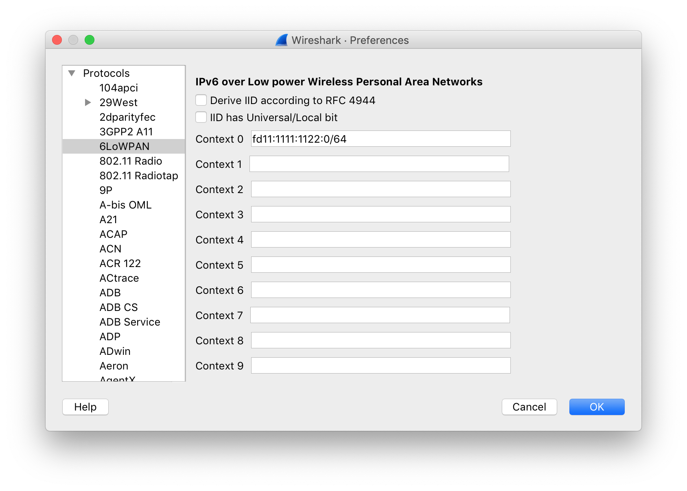
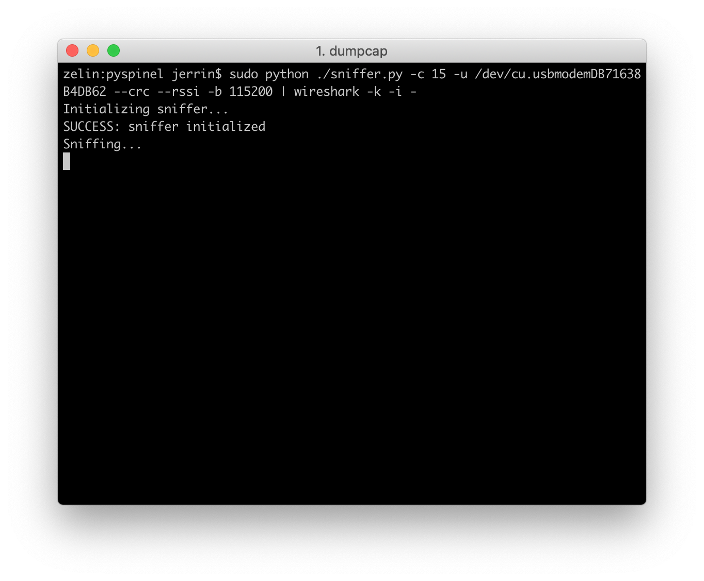

Build a Thread Network Sniffer¶
Overivew¶
During development, you may need to check what kind of data is wirelessly transmitted over the Thread network. With Pyspinel and Wireshark, you can set up a sniffer which allows to dynamically monitor the IEEE 802.15.4 wireless traffic.
The Pyspinel sniffer tool connects to a Thread NCP device and converts it into a promiscuous packet sniffer, generating a pcap (packet capture) stream to be saved or piped directly into Wireshark.
Wireshark is an open-source tool that can decode network protocols in the Thread stack, such as IEEE 802.15.4, 6LoWPAN, IPv6, MLE (Mesh Link Establishment), UDP, and CoAP.
This section describes how to set up a Thread Sniffer, which can help you to efficiently analyze Thread network traffic.
Requirements¶
- macOS or Ubuntu machine
- Pitaya Go
- Python 2.7 or Python 3
- Wireshark 2.4.1 or newer
Installation¶
Set up the sniffer environment¶
Clone and install Pyspinel and dependencies:
git clone https://github.com/openthread/pyspinel
cd pyspinel
pip install --user future pyserial ipaddress
Install Wireshark¶
On MacOS, go to the Wireshark Download page and install the current stable release of Wireshark.
On Ubuntu Linux, you can run the following commands:
sudo add-apt-repository ppa:wireshark-dev/stable
sudo apt-get update
sudo apt-get install wireshark
Flash the NCP Radio firmware¶
The pre-built firmware is located in pitaya-go/firmware/openthread/ncp with the name thread_ncp_radio_usb_pitaya_go_vx.x.x.
-
Connect Pitaya Go to your PC using the USB-C cable.
-
While pushing the USER button, press the RESET button to enter the DFU (Device Firmware Update) mode. Then program the firmware using the nRF Connect for Desktop tool.
Tip
See Programming section for details about how to program your Pitaya Go.
Thread network properties¶
Before continuing, get the following properties for the Thread network you wish to sniff. You'll need them for Wireshark configuration and running the Pyspinel sniffer.
Mesh Local Prefix¶
To get the Mesh Local Prefix from a device in the target Thread network:
-
Using the OpenThread CLI:
> dataset active Active Timestamp: 0 Channel: 15 Channel Mask: 07fff800 Ext PAN ID: 1111111122222222 Mesh Local Prefix: fd11:1111:1122:0/64 Master Key: 00112233445566778899aabbccddeeff Network Name: OpenThreadDemo PAN ID: 0x1234 PSKc: 61e1206d2c2b46e079eb775f41fc7219 Security Policy: 672, onrcb Done
-
Using
wpanctlwith an NCP:$ sudo wpanctl getprop IPv6:MeshLocalPrefix IPv6:MeshLocalPrefix = "fd11:1111:1122::/64"
-
Using the OTBR Web GUI, select Status. The Mesh Local Prefix is listed as IPv6:MeshLocalPrefix similar to
wpanctl.
Channel¶
To get the Channel from a device in the target Thread network:
-
Using the OpenThread CLI:
> channel 15 Done -
Using
wpanctlwith an NCP:$ sudo wpanctl getprop NCP:Channel NCP:Channel = 15
-
Using the OTBR Web GUI, select Status. The Channel is listed as NCP:Channel similar to
wpanctl.
Master Key¶
The Thread network Master Key is used by Wireshark to decrypt packets after capture. To get the Master Key from a device in the target Thread network:
-
Using the OpenThread CLI:
> masterkey 00112233445566778899aabbccddeeff Done
-
Using
wpanctlwith an NCP:$ sudo wpanctl getprop Network:Key Network:Key = [00112233445566778899AABBCCDDEEFF]
Note
The Thread network Master Key is not available in the OTBR Web GUI.
Wireshark configuration - protocols¶
Wireshark must be configured to properly show Thread packets.
Select Preferences... in Wireshark and expand the Protocols section.
6LoWPAN¶
Select 6LoWPAN from the list of protocols and verify or change the following settings:
- Uncheck Derive ID according to RFC 4944.
- Update Context 0 with the Mesh Local Prefix for the target Thread network.
Wireshark uses context configurations to parse the compressed IPv6 address and display the IPv6 source and destination addresses correctly.

CoAP¶
Select CoAP from the list of protocols and set CoAP UDP Port to 61631. This ensures TMF messages (like address solicit) are displayed.
IEEE 802.15.4¶
Select IEEE 802.15.4 from the list of protocols and verify or change the following settings:
-
Set 802.15.4 Ethertype (in hex) to
0x809a. -
Set the Security Suite (802.15.4-2003) to
AES-128 Encryption, 32-bit Integrity Protection. -
Click the Edit... button next to Decryption Keys, which is where you add the Thread network Master Key for packet decryption.
a. Click + to add a Decryption key.
b. Enter the Thread network Master Key into the Decryption key column.
c Enter
1as the Decryption key index.d. Select Thread hash from the Key hash column listbox.
e. Click OK to save the decryption key.

Thread¶
Select Thread from the list of protocols and verify or change the following settings:
-
Enter
00000000for the Thread sequence counter. -
Uncheck Use PAN ID as first two octets of master key.
-
Check Automatically acquire Thread sequence counter.
Click the OK button to save any protocol changes.

Note
Some Thread traffic might be analyzed as the ZigBee protocol. To correctly display these two protocols, edit the enabled protocols in Wireshark:
-
In Wireshark, go to Analyze > Enabled Protocols.
-
Uncheck the following protocols:
- LwMesh
- ZigBee
- ZigBee Green Power
Wireshark configuration - RSSI¶
To display RSSI in Wireshark:
- Go to Preferences > Protocols > IEEE 802.15.4.
- Check TI CC24xx FCS format.
- Click OK to save and return to the Preferences menu.
- From Preferences, select Appearance > Columns.
- Add a new entry:
- Title: RSSI
- Type: Custom
- Fields: wpan.rssi
Run the sniffer¶
Make sure to use the specific device path for your NCP and the channel for the Thread network you are attempting to sniff.
Change to the pyspinel directory and start Wireshark with the following command:
sudo python ./sniffer.py -c 15 -u /dev/cu.usbmodemDB71638B4DB62 --crc --rssi -b 115200 | wireshark -k -i -
The parameters stand for the following:
-c: Thread Channel-u: The NCP device path–crc: Disable the wrong FCS warning resulting from the fact that Nordic radio replaces one byte of CRC with LQI after a packet is received and verified.--rssi: Ensure the RSSI is included in the pcap output.-b: Baud rate
You should now be able to see the packets and related protocols for this configuration in Wireshark:


Reference¶
For more information on how to use Pyspinel and Wireshark, see the following:
License¶
Portions of this page are reproduced from work created and shared by Google and used according to terms described in the Creative Commons 3.0 Attribution License.
Thread is a registered trademark of the Thread Group, Inc.
Create an Issue¶
Interested in contributing to this project? Want to report a bug? Feel free to click here: